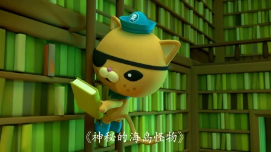
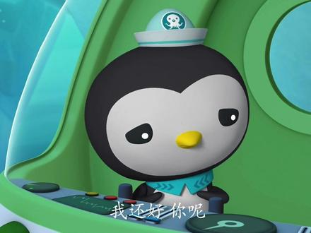
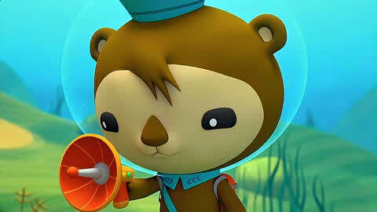
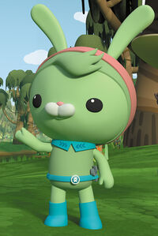
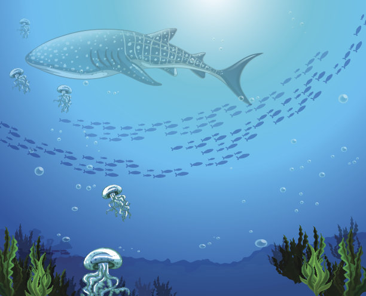

🌟 小分队队员档案 🌟
六位性格各异的海洋探险家，组成了这支无敌的海底小分队
想了解动画原版设定？点击访问 百度百科·角色介绍外链↗

巴克队长
物种：北极熊
职务：队长
小队里最勇敢、沉着冷静的核心人物，是大家引以为傲和信赖的队长，果敢决策激励着每一位成员。
口头禅："保护海洋，人人有责！"
小趣事：他擅长吹军号，每次任务开始前都会吹响集结号。

呱唧
物种：猫
职务：中尉 / 驾驶员
性格冲动热血，喜欢冒险和讲故事，戴着一只眼罩，驾驶技术一流，是队里的活力担当。
口头禅："哇哦！太刺激啦！"
小趣事：他总把自己幻想成海盗，背包里藏着一本海盗日记。

皮医生
物种：企鹅
职务：队医
温柔善良的医疗官，随身携带医药包，总能在关键时刻救助受伤的海洋生物，是大家的暖心依靠。
口头禅："别担心，有我在！"
小趣事：他其实有点害羞，但面对受伤动物时立刻变得勇敢。

谢灵通
物种：海獭
职务：生物学家
博学多识，总是透过放大镜观察生物，能发现队友忽略的细节。
口头禅："Fascinating！（太神奇了！）"
小趣事：他爱吃海草蛋糕，经常在实验室里一边吃一边记笔记。

突突兔
物种：兔子
职务：机械工程师
小队的技术担当，负责保养和改装从灯笼鱼艇到魔鬼鱼艇的所有交通工具，动手能力超强。
口头禅："交给我吧！修好它！"
小趣事：她的工具腰带永远叮当作响，能掏出各种意想不到的小零件。

章教授
物种：章鱼
职务：创始人 / 顾问
海底小分队的创始人，智慧的长者，拥有丰富的海洋知识，常坐在章鱼堡的图书馆里为队员指点迷津。
口头禅："让我想想……"
小趣事：他有七条触手都能同时翻书，图书馆里的书他几乎都读过。
队员能力速查表
| 队员 | 专长 | 代表舰艇 | 性格关键词 |
|---|---|---|---|
| 巴克队长 | 领导决策、极地生存 | 北极熊艇 | 沉着、勇敢、可靠 |
| 呱唧 | 驾驶、探险 | 虎鲨艇 | 热血、冲动、幽默 |
| 皮医生 | 医疗救护 | 企鹅艇 | 温柔、细心、善良 |
| 谢灵通 | 生物研究、观察 | 蓝鲸艇 | 博学、专注、好奇 |
| 突突兔 | 机械维修、改装 | 魔鬼鱼艇 | 机灵、能干、创新 |
| 章教授 | 知识指导、策略 | 章鱼堡 | 睿智、沉稳、远见 |